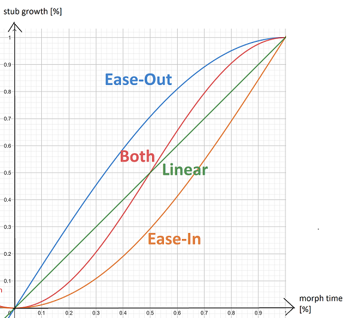

- Idea: Improve user experience with different morphing types
- Misue & Akasaka use constant morphing speed
- Ease-In: slowly start the morph
- Ease-Out: slowly stop the morph
- known principles from web-design
- Problem 2: Adapt existing scheduling algorithms for Ease-In and Ease-Out! How does that effect the total time?
- new crossings above green line